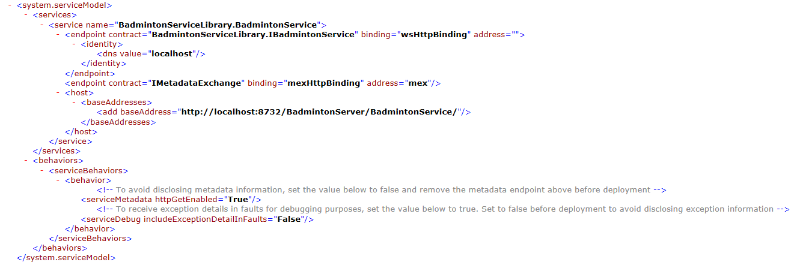
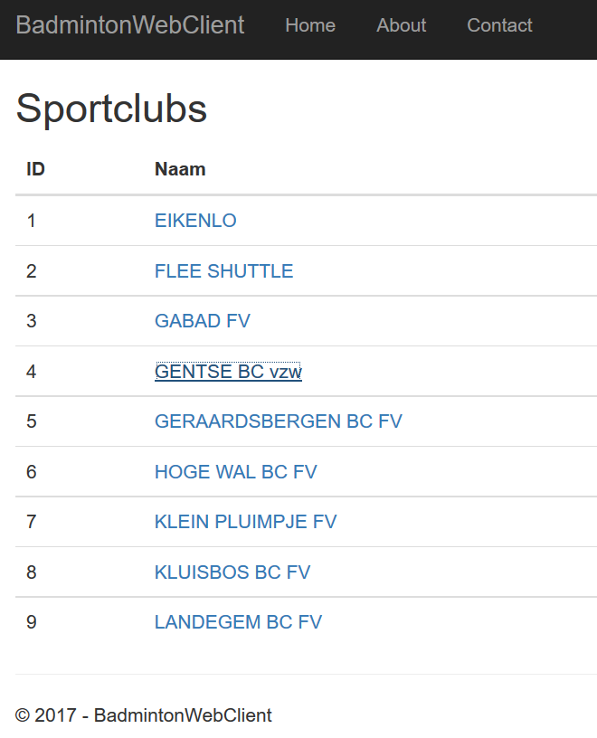
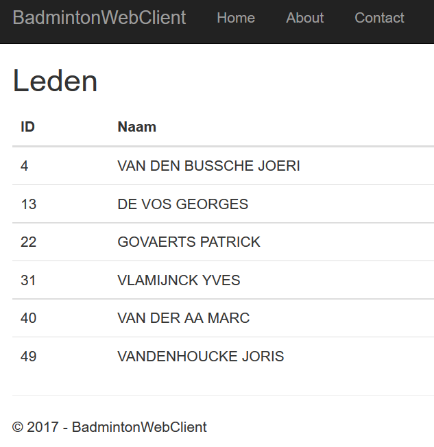

In dit labo maken we gebruik van een bestaande datalaag die gegevens aanlevert over badmintonclubs. Een aantal van de gegevens van deze datalaag worden beschikbaar gesteld voor andere applicaties via WCF in C#.
Hiervoor maken we vijf "Visual Studio"-projecten. Bewaar al je projecten LOKAAL op de computer bv. in C:\temp\.... De "solution" BadmintonServers
bevat drie projecten:
Daarnaast maken we ook twee "client"-projecten die de bovenstaande services uittesten.
Maak een nieuw project BadmintonServiceLibrary van het type "WCF Service Library". Zorg ervoor dat de "solution" de naam BadmintonServers krijgt. In dit project beschrijf en implementeer je de WCF-service. In twee volgende projecten gaan we deze service op twee manieren hosten: via IIS en via een console-applicatie. Meer informatie vind je in de MSDN-libary:
Bij het aanmaken van het project wordt al één service-interface en -implemenatie aangemaakt. Hernoem ze en pas de functionaliteit aan. De service biedt de twee volgende opdrachten aan:
Om gebruik te maken van de datalaag moet je zijn DLL toevoegen aan dit project (rechts klikken op References; Add Reference; Browse). Je kan de structuur van de datalaag bekijken in de Object Browser.
Merk op dat je ook DataContracten moet aanmaken. Test de aangemaakte service uit (rechtsklikken op het project --> Debug --> Start new instance --> dubbelklik op een methode)
Tip: Om makkelijk objecten van verschillende klassen met dezelfde eigenschappen te converteren kan je gebruik maken van AutoMapper. Je voegt dit toe via NuGet (rechts klikken op References; Manage NuGet Packages; Browse)
Maak een service op IIS die de bovenstaande diensten via WCF over HTTP. Je kan hiervoor een project van het type "WCF Service Application" aanmaken. Pas de standaard aangemaakte service aan:
<%@ServiceHost language=c# Debug="true" Service="Microsoft.ServiceModel.Samples.CalculatorService"%>
Informatie over de service krijg je als je "View in Browser" selecteert.
Schrijf een console-applicatie die als client gebruik maakt van WCF om allerlei informatie over de badmintonclubs op te vragen aan de server en op het scherm te tonen. De functionaliteit van dit programma is:
Om de proxy en de bijhorende configuratie te genereren voeg je de WCF-service toe aan de hand van zijn WSDL. (Service Reference)
Publiceer de service nu als console-applicatie in een nieuw project BadmintonServerConsole gebruik makende van TCP. Neem alle configuratie op in een configuratiebestand (ipv in code). Een voorbeeld van de configuratie over HTTP is
Je vindt deze configuratie ook in het project BadmintonServiceLibrary in het bestand App.Config. Voeg deze configuratie toe aan en pas ze aan naar TCP (zoek online naar de juiste instellingen). Bij het opstarten van de service krijg je een waarschuwing. Klik die weg.
Maak een website bestaande uit twee webpagina's:
De data voor de (ASP.NET MVC) webapplicatie wordt verkregen via WCF over TCP van de server BadmintonServerConsole. Voeg hiervoor bij "Connected Services" de "Microsoft WCF Web Service Reference Provider" toe. Gebruik de URI om de service te registreren. Voeg, indien nodig, daarna bij References via NuGet ook de packages: System.ServiceModel.Primitives, System.ServiceModel.NetTcp en System.ServiceModel.Security toe.
 